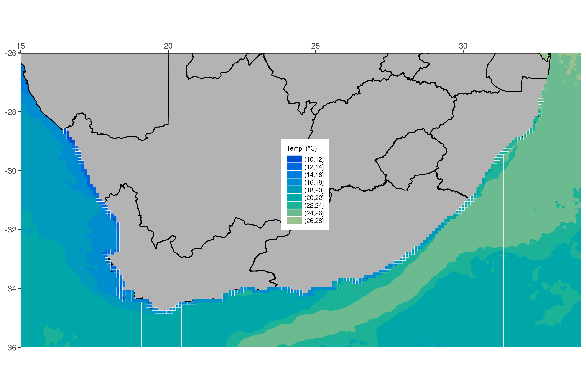
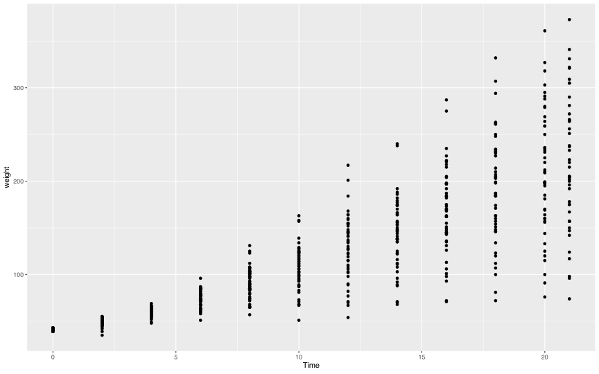
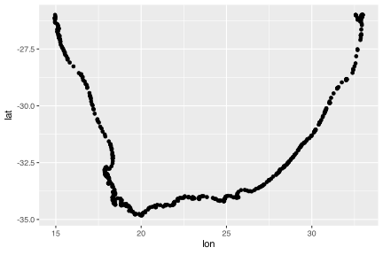
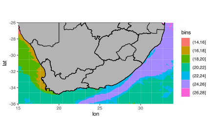
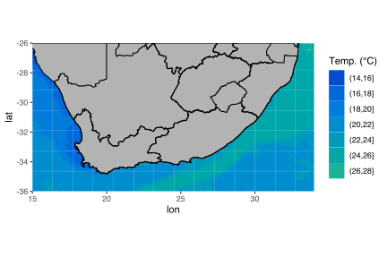
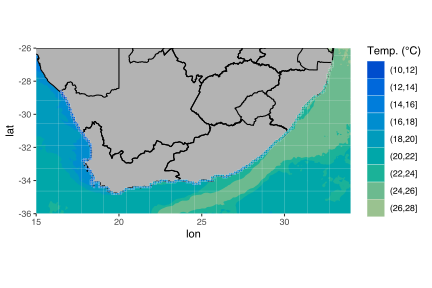
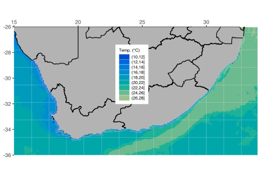

![]()
# Load libraries
library(tidyverse)
library(ggpubr)
# Load data
load("../../data/south_africa_coast.Rdata")
load("../../data/sa_provinces.RData")
load("../../data/rast_annual.Rdata")
load("../../data/MUR.Rdata")
load("../../data/MUR_low_res.RData")
# Choose which SST product you would like to use
sst <- MUR_low_res
# OR
sst <- MUR
# The colour palette we will use for ocean temperature
cols11 <- c("#004dcd", "#0068db", "#007ddb", "#008dcf", "#009bbc",
"#00a7a9", "#1bb298", "#6cba8f", "#9ac290", "#bec99a")7. Mapping with ggplot2
Making basic maps

“There’s no map to human behaviour.”
— Bjork
“Here be dragons.”
— Unknown
Yesterday you learned how to create ggplot2 figures, change their aesthetics, labels, colour palettes, and facet/arrange them. Now you are going to look at how to create maps.
Most of the work that you will perform as environmental/biological scientists involves going out to a location and sampling information there. Sometimes only once, and sometimes over a period of time. All of these different sampling methods lend themselves to different types of figures. One of those, collection of data at different points, is best shown with maps. As you will see over the course of Day 3, creating maps in ggplot2 is very straight forward and is extensively supported. For that reason you are going to have plenty of time to also learn how to do some more advanced things. Your goal in this chapter is to produce the figure below.

Using prepared data
Before you begin let’s go ahead and load the packages you will need, as well as the several dataframes required to make the final product.
A new concept?
The idea of creating a map in R may be daunting to some, but remember that a basic map is nothing more than a simple figure with an x and y axis. We tend to think of maps as different from other scientific figures, whereas in reality they are created the exact same way. Let’s compare a dot plot of the chicken weight data against a dot plot of the coastline of South Africa.
Chicken dots:

South African coast dots:

Does that look familiar? Notice how the x and y axis tick labels look the same as any map you would see in an atlas. This is because they are. But this isn’t a great way to create a map. Rather it is better to represent the land mass with a polygon. With ggplot2 this is a simple task.
Land mask
Now that you have seen that a map is nothing more than a bunch of dots and shapes on specific points along the x and y axes you are going to look at the steps you would take to build a more complex map. Don’t worry if this seems daunting at first. You are going to take this step by step and ensure that each step is made clear along the way. The first step is to create a polygon. Note that you create an aesthetic argument inside of geom_polygon() and not ggplot() because some of the steps you will take later on will not accept the group aesthetic. Remember, whatever aesthetic arguments we put inside of ggplot() will be inserted into all of our other geom_...() lines of code.
Borders
The first thing you will add is the province borders as seen in Figure @ref(fig:map-goal). Notice how you only add one more line of code to do this.
Force lon/lat extent
Unfortunately when you added our borders it increased the plotting area of our map past what you would like. To correct that you will need to explicitly state the borders you want.
ggplot(data = south_africa_coast, aes(x = lon, y = lat)) +
geom_polygon(colour = "black", fill = "grey70", aes(group = group)) +
geom_path(data = sa_provinces, aes(group = group)) +
coord_equal(xlim = c(15, 34), ylim = c(-36, -26), expand = 0) # Force lon/lat extent
Ocean temperature
This is starting to look pretty fancy, but it would be nicer if there was some colour involved. So let’s add the ocean temperature. Again, this will only require one more line of code. Starting to see a pattern? But what is different this time and why?
ggplot(data = south_africa_coast, aes(x = lon, y = lat)) +
geom_raster(data = sst, aes(fill = bins)) + # The ocean temperatures
geom_polygon(colour = "black", fill = "grey70", aes(group = group)) +
geom_path(data = sa_provinces, aes(group = group)) +
coord_equal(xlim = c(15, 34), ylim = c(-36, -26), expand = 0)
That looks… odd. Why do the colours look like someone melted a big bucket of ice cream in the ocean? This is because the colours you see in this figure are the default colours for discrete values in ggplot2. If you want to change them we may do so easily by adding yet one more line of code.
ggplot(data = south_africa_coast, aes(x = lon, y = lat)) +
geom_raster(data = sst, aes(fill = bins)) +
geom_polygon(colour = "black", fill = "grey70", aes(group = group)) +
geom_path(data = sa_provinces, aes(group = group)) +
scale_fill_manual("Temp. (°C)", values = cols11) + # Set the colour palette
coord_equal(xlim = c(15, 34), ylim = c(-36, -26), expand = 0)
There’s a colour palette that would make Jacques Cousteau swoon. When you set the colour palette for a figure in ggplot2 you must use that colour palette for all other instances of those types of values, too. What this means is that any other discrete values that will be filled in, like the ocean colour above, must use the same colour palette (there are some technical exceptions to this rule that you will not cover in this course). You normally want ggplot2 to use consistent colour palettes anyway, but it is important to note that this constraint exists. Let’s see what I mean. Next you will add the coastal pixels to our figure with one more line of code. You won’t change anything else. Note how ggplot2 changes the colour of the coastal pixels to match the ocean colour automatically.
ggplot(data = south_africa_coast, aes(x = lon, y = lat)) +
geom_raster(data = sst, aes(fill = bins)) +
geom_polygon(colour = "black", fill = "grey70", aes(group = group)) +
geom_path(data = sa_provinces, aes(group = group)) +
geom_tile(data = rast_annual, aes(x = lon, y = lat, fill = bins),
colour = "white", size = 0.1) + # The coastal temperature values
scale_fill_manual("Temp. (°C)", values = cols11) +
coord_equal(xlim = c(15, 34), ylim = c(-36, -26), expand = 0)
Final touches
You used geom_tile() instead of geom_rast() to add the coastal pixels above so that you could add those little white boxes around them. This figure is looking pretty great now. And it only took a few rows of code to put it all together! The last step is to add several more lines of code that will control for all of the little things you want to change about the appearance of the figure. Each little thing that is changed below is annotated for your convenience.
final_map <- ggplot(data = south_africa_coast, aes(x = lon, y = lat)) +
geom_raster(data = sst, aes(fill = bins)) +
geom_polygon(colour = "black", fill = "grey70", aes(group = group)) +
geom_path(data = sa_provinces, aes(group = group)) +
geom_tile(data = rast_annual, aes(x = lon, y = lat, fill = bins),
colour = "white", size = 0.1) +
scale_fill_manual("Temp. (°C)", values = cols11) +
coord_equal(xlim = c(15, 34), ylim = c(-36, -26), expand = 0) +
scale_x_continuous(position = "top") + # Put x axis labels on top of figure
theme(axis.title = element_blank(), # Remove the axis labels
legend.text = element_text(size = 7), # Change text size in legend
legend.title = element_text(size = 7), # Change legend title text size
legend.key.height = unit(0.3, "cm"), # Change size of legend
legend.background = element_rect(colour = "white"), # Add legend background
legend.justification = c(1, 0), # Change position of legend
legend.position = c(0.55, 0.4) # Fine tune position of legend
)
final_map
That is a very clean looking map so go ahead and save it on your local disk.
Session info
Reuse
Citation
BibTeX citation:
@online{smit2021,
author = {Smit, AJ},
title = {7. {Mapping} with Ggplot2},
date = {2021-01-01},
url = {https://tangledbank.netlify.app/BCB744/intro_r/07-mapping.html},
langid = {en}
}
For attribution, please cite this work as:
Smit A (2021) 7. Mapping with ggplot2. https://tangledbank.netlify.app/BCB744/intro_r/07-mapping.html.